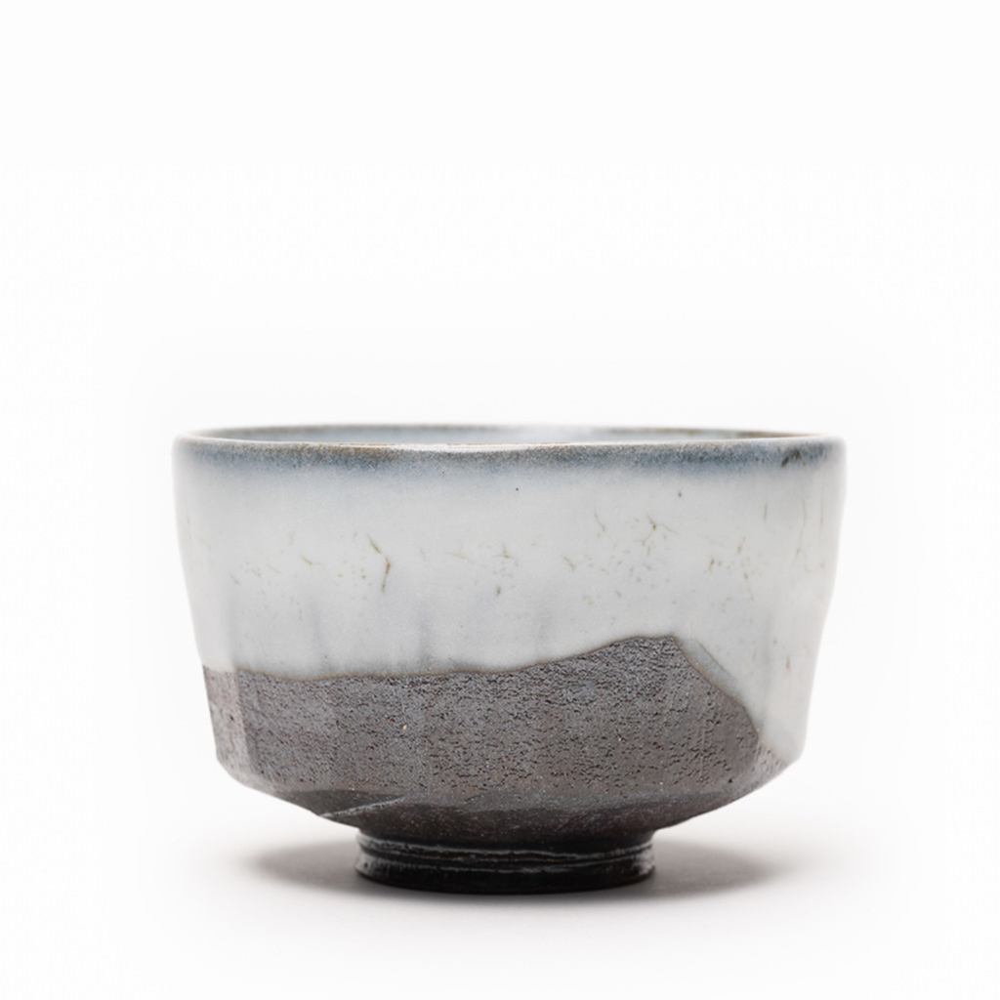
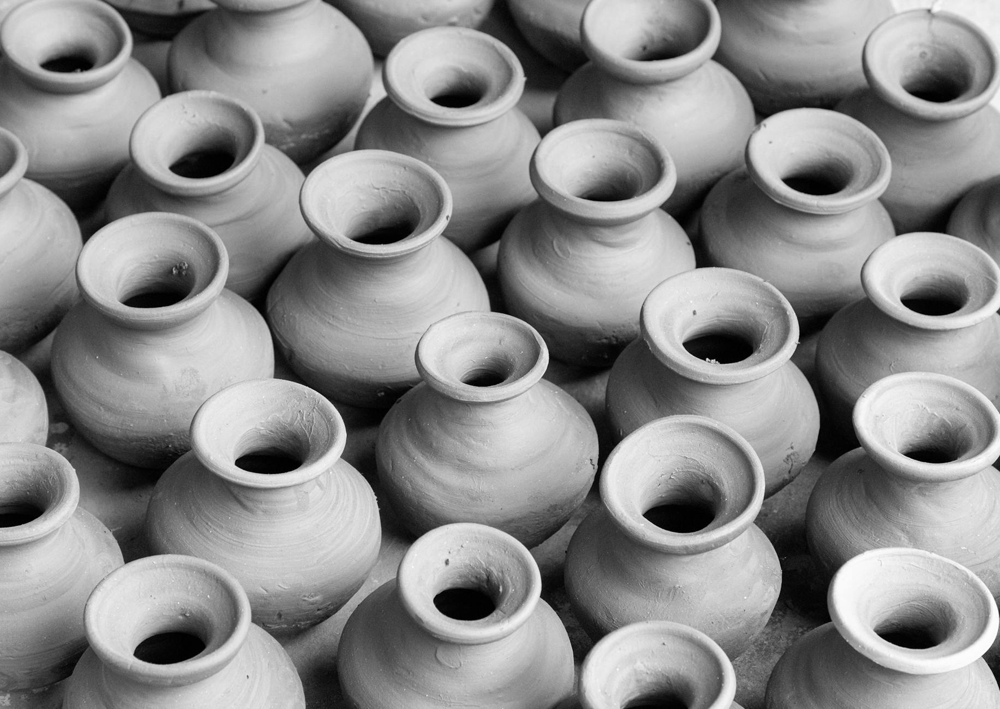
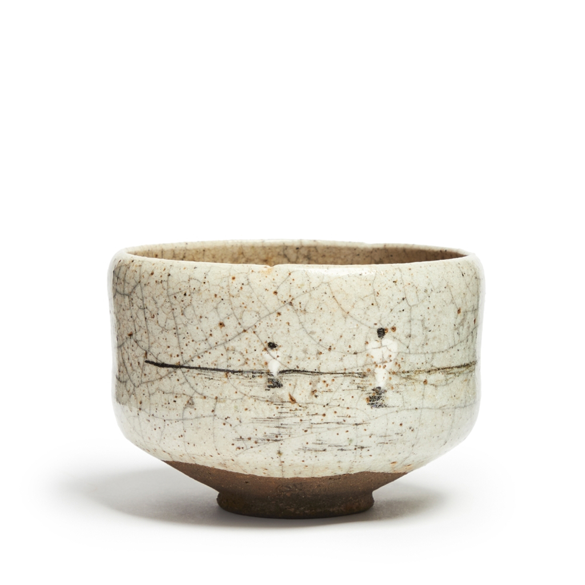
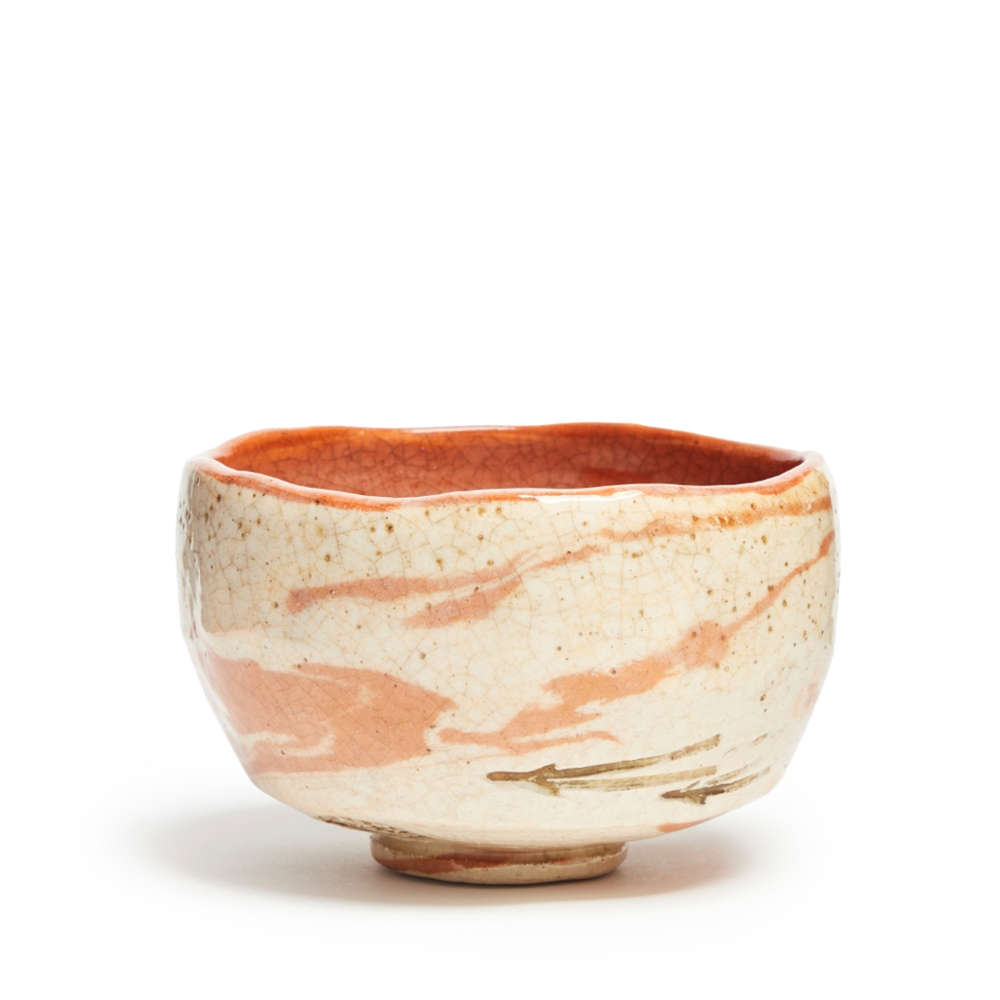

CATALOGUE NO. 882-V01 // VISUAL STATEMENT
FORM /
TEXTURE /
SILENCE
An exploration of geological time through the medium of refined stoneware. Each vessel is a singular point in a continuing spatial dialogue.
View MonographThe Quiet Anthology
SELECTED_WORKS_04-08


Archive
Overview
TOTAL COLLECTION: 412 PIECES
ACTIVE EXHIBITIONS: 03
02 // THE PHILOSOPHY
WABI-SABI
AS
ARCHITECTURAL
RESTRAINT.
"Nothing lasts, nothing is finished, and nothing is perfect." We apply this ethos through the rigorous lens of modernism. By stripping away the decorative, we allow the material, the clay, the heat, the time, to speak with total clarity. Our work is not about perfection, but about the precise tension between the organic and the engineered.
PROCESS_A: MATERIAL SELECTION
0.1
PROCESS_B: CHANNEL FORMING
0.2
PROCESS_C: CURATION
0.3
DEEP NAVIGATION
EXPLORE THE ARCHIVE